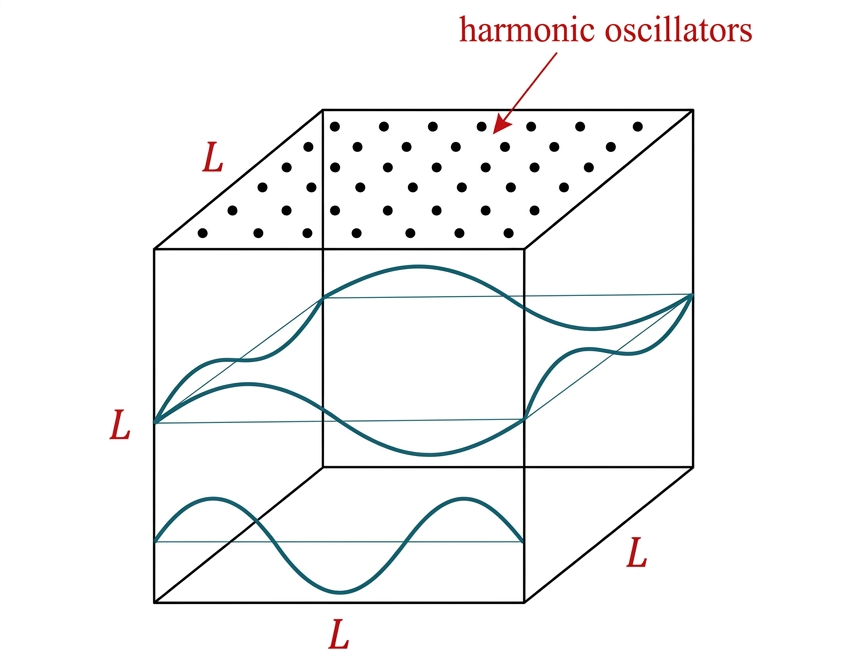
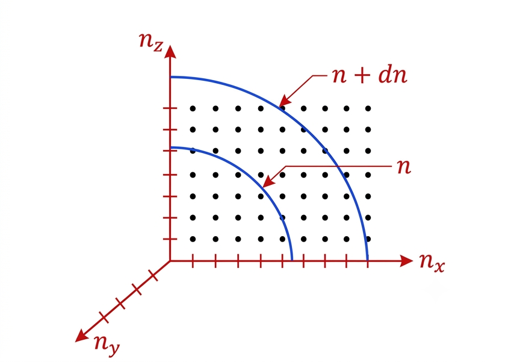
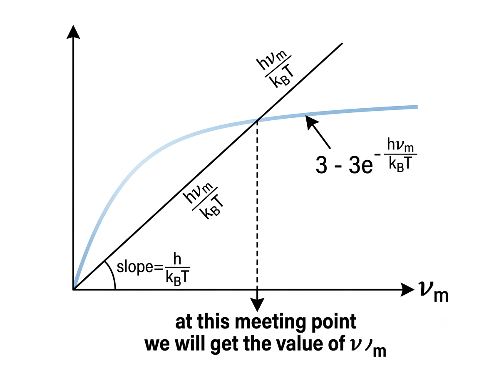

2026-06-14
Essentially, all of chemistry is a consequence of the laws of quantum mechanics. If chemistry is to be understood at the fundamental level of electrons, atoms, and molecules, quantum mechanics must be incorporated and internalized. Quantities such as the heat of combustion of octane, 25 °C, the entropy of liquid water, the reaction rate of N2 and H2 gases under specified conditions, the equilibrium constants of chemical reactions, the absorption spectra of coordination compounds, the NMR spectra of organic compounds, the nature of the products when organic compounds react, the shape into which a protein molecule will fold when it is formed in a cell, the structure and function of DNA are all a consequence of quantum mechanics.
In 1929, Dirac, one of the founders of quantum mechanics, wrote that "The general theory of quantum mechanics is now almost complete...the underlying physical laws necessary for the mathematical theory of...the whole of chemistry are thus completely known, and the difficulty is only that the exact applications of these laws lead to equations much too complicated to be soluble."
After its discovery, quantum mechanics was used to develop many concepts that helped explain chemical properties. However, because of the highly difficult calculations needed to apply quantum mechanics to chemical systems, it was of little practical value in accurately calculating the properties of chemical systems for many year;s after its discovery. Nowadays, the extraordinary power of modern computation allows quantum-mechanical calculations to give accurate chemical predictions in many systems of real chemical interest.
Two fundamental properties of waves are Interference
and Diffraction
whereas particles follow Newton’s Equation of
Motion.
Scalar Wave Equation:
(1) \begin{equation*} \frac{\partial^2 E}{\partial t^2} = c^2 \frac{\partial^2 E}{\partial x^2} \end{equation*} (1) is applicable to an electromagnetic wave.
For an elementary wave, the change of change of anything with respect to time is proportional to the change of change of anything with respect to space.
(2) \begin{equation*} E = A \sin\left(\frac{2 \pi x}{\lambda} - 2 \pi \nu t\right) \end{equation*} let\(\frac{2 \pi}{\lambda} = k\) and \(2\pi\nu = \omega \). Then, E = A sin(kx-ωt)
Now, we calculate the second time derivative of (2)
(3), (4)\begin{align*} \frac{\partial E}{\partial t} &= -\omega A \cos(kx - \omega t) \\ \frac{\partial^2 E}{\partial t^2} &= -\omega^2 A \sin(kx - \omega t) \end{align*}
Similarly, calculating the second spatial derivative of (2)
(5), (6) \begin{align*} \frac{\partial E}{\partial x} &= k A \cos(kx - \omega t) \\ \frac{\partial^2 E}{\partial x^2} &= -k^2 A \sin(kx - \omega t) \end{align*}
Substituting Equation (4) and Equation (6) back into the wave equation (1) yields:
(7) −ω2Asin (kx − ωt) = c2(−k2Asin (kx − ωt))
Dividing both sides by −Asin (kx − ωt) simplifies the expression to:
(8) ω2 = c2k2
Taking the positive square root of both sides gives:
(9) ω = ck
Again, as shown previously,
(10) \begin{equation*} \omega = 2\pi\nu, k = \frac{2\pi}{\lambda} \end{equation*}
Substituting these two relations into (9);
(11) \begin{equation*} 2\pi\nu = c \left( \frac{2\pi}{\lambda} \right) \end{equation*}
Dividing both sides by 2π simplifies the equation to:
(12) \begin{equation*} \nu = \frac{c}{\lambda} \end{equation*}
Multiplying both sides by λ gives the final relationship:
(13) c = λν
Hence proved.
The Dawn of a Crisis: At the turn of the twentieth century, the reliable frameworks of Newtonian mechanics and Maxwellian electrodynamics suddenly collapsed when applied to the atomic scale.
A Radical Leap: This breakdown forced physicists to abandon the assumption of continuous energy, replacing it with the groundbreaking concept of discrete energy packets known as "quanta."
The Empirical Trigger: This was not just a theoretical debate; it was driven by stark anomalies in the lab that classical physics simply could not reconcile.
The Quantum Turning Point: These systemic failures exposed the hard boundaries of the old world, leading to a series of historic experiments that birthed modern quantum mechanics.
This theoretical collapse was forced by an unavoidable reality: experimental data flatly contradicted classical predictions. Laboratory anomalies transformed from minor quirks into insurmountable roadblocks for traditional physics, challenging long-held assumptions about light, matter, and atomic structure. The most devastating blows came from a handful of targeted investigations—specifically, the riddle of black-body radiation, the confounding mechanics of the photoelectric effect, and the unexplained line spectra of the hydrogen atom. Each of these pivotal experiments systematically exposed the limits of classical intuition, leaving physics with no choice but to rebuild its foundational rules from the ground up.
Blackbody Radiation
Photoelectric effect
Compton Scattering
Stability of atoms and Atomic Spectra
Heat Capacity of solids
Pair Creation and Pair Annihilation
When a solid is heated, it emits light. Classical physics pictures light as a wave consisting of oscillating electric and magnetic fields, an electromagnetic wave. The frequency ν and wavelength λ of an electromagnetic wave traveling through vacuum are related by
(14) \begin{align*} \lambda \nu &= c \end{align*}
where c = 3.0 × 108 m/s is the speed of light in vacuum. While human vision is sensitive to frequencies between 4 × 1014 and 7 × 1014 Hz, electromagnetic radiation covers a broader spectrum. The term "light" is used here to refer to all electromagnetic radiation, not just visible light.
Thermal Radiation: Any body in our universe at finite temperature emits radiation in practically all frequencies.
Definition of a Blackbody: A body that absorbs all the radiation incident upon it and emits radiation in all the frequencies.
Definition of Spectral Radiancy: Total energy emitted per unit volume per unit time in the frequency range ν to ν + dν
or
Total energy emitted per unit cross-sectional area per unit time in the frequency range ν to ν + dν
Wien’s Displacement Law: The wavelength at which a blackbody radiates maximum intensity is inversely proportional to its absolute temperature. The law is expressed mathematically as:
(15) \begin{align*} \lambda _{max}=\frac{b}{T}\ \end{align*}
Wien’s constant, b = 2.9 × 10−3 mK
Stefan’s Law: The total thermal radiation power emitted by an object is directly proportional to its surface area and the fourth power of its absolute temperature. For an ideal black body, the total radiancy R is calculated as:
(16) R = σAT4
Stefan-Boltzmann constant, σ = 5.670 × 10−8 W m2 K−−4
The internal walls of the black body behave like simple harmonic oscillators.
Each vibrating motion is associated with a standing wave of radiation within a black body.
There can be an infinite number of standing waves of all wavelengths within the black body cavity (blackbody can absorb radiation of any frequency), hence, at a given temperature, the number of standing waves within a wavelength range λ to λ + dλ depends on the temperature.
At any given instant, the amount of waves of diffn λ coming out of the black body is proportional to the amount of standing waves of different n λ within the cavity.


For further calculations, we calculate the number of nodes, which are countably infinite, instead of wavelength, which are uncountably infinite.

Standing waves: criteria
nodes at the walls
in 1-D, eqn of standing wave:
L is an integral multiple of
$$\frac{\lambda}{2}$$
$$\Rightarrow L = \frac{n\lambda}{2} \quad n \in
\mathbb{N}$$
In 2-D, the projection of the wave in any direction should be a standing wave. $$L = \frac{n\lambda}{2} \qquad k = \frac{2\pi}{\lambda} \qquad \lambda = \frac{v}{\nu} \qquad v = \text{speed}$$
$$L = \frac{n\lambda}{2} = \frac{n v}{2\nu} \quad \dots \quad n = 1, 2, 3, \dots \qquad k = \frac{n\pi}{L}$$ $$\psi = e^{i(kx - \omega t)}$$in 3-D, \(\vec{x} = \vec{r}\)
then k must be a vector so that the product becomes scalar → escalar.Therefore, \(\vec{k} \)= vector
In 3-D, the components of the standing wave must satisfy: $$k_x = \frac{n_x\pi}{L} \qquad k_y = \frac{n_y\pi}{L} \qquad k_z = \frac{n_z\pi}{L}$$
nx, ny, nz → 1, 2, 3, … k2 = kx2 + ky2 + kz2 $$\Rightarrow \boxed{n^2 = n_x^2 + n_y^2 + n_z^2} \rightarrow \text{condition}$$

The number of standing waves between n and n + dn is proportional to the volume of ⅛th of a shell of inner radius n and outer radius n + dn.
$$N \propto \frac{1}{8} \left[ \frac{4}{3}\pi(n+dn)^3 - \frac{4}{3}\pi n^3 \right]$$
$$\text{or, } N \propto \frac{1}{8} \left[ \frac{4}{3}\pi \left( (dn)^3 + 3n^2dn + 3n(dn)^2 \right) \right]$$
As dn is very small, (dn)2 and (dn)3 can be neglected: $$N \propto \frac{1}{8} \left[ \frac{4}{3}\pi \cdot 3n^2dn \right]$$ $$N \propto \frac{\pi}{2} n^2dn$$
again, $$n = \frac{2L}{\lambda} = \frac{kL}{\pi} = \frac{2\nu L}{v}$$
$$n^2 = \frac{4L^2}{\lambda^2} = \frac{k^2L^2}{\pi^2} = \frac{4\nu^2 L^2}{v^2}$$
$$dn = -\frac{2L}{\lambda^2} d\lambda \equiv \frac{L}{\pi} dk \equiv \frac{2L}{v} d\nu$$
$$n^2dn = -\frac{8L^3}{\lambda^4} d\lambda \equiv \frac{k^2L^3}{\pi^3} dk \equiv \frac{8\nu^2 L^3}{v^3} d\nu$$
now, $$N \propto \frac{\pi}{2} n^2dn \quad \text{(number of of standing waves between } n \text{ to } n+dn\text{)}$$
number of standing waves $$\text{between } \lambda \text{ to } \lambda+d\lambda \quad \propto \frac{\pi}{2} \left( \frac{-8L^3}{\lambda^4} \right) d\lambda \rightarrow \frac{-4\pi L^3}{\lambda^4} d\lambda \rightarrow \frac{+4\pi L^3}{\lambda^4} (-d\lambda)$$
$$\text{b/w } k \text{ to } k+dk \quad \propto \frac{k^2}{2\pi^2} L^3 dk$$
$$\text{b/w } \nu \text{ to } \nu+d\nu \quad \propto \frac{4\pi\nu^2}{v^3} L^3 d\nu$$
$\begin{aligned} &\text{justify the sign:} \\ &d\lambda < 0 \text{ because } \nu > 0 \end{aligned}$
Each standing wave is associated with a vibrational degree of the
black body cavity.
Actually for light, N = 2N
since standing waves are light waves having two orientations of
polarization.
Rayleigh - Jean used the equipartition principle to determine the average energy associated with each vibrational degree of freedom.
⟨ℰ⟩ = kBT here kB → Boltzmann constant
Average energy associated with a standing wave in the frequency range ν to ν + dν is equal to:
ℰν → ν + dν ∝ Nν → ν + dν × kBT $$\propto \frac{4\pi\nu^2}{v^3} L^3 d\nu \cdot k_B T$$
Here, standing waves are light waves having two orientations of polarization. Therefore, total number of waves → 2N
$$\rightarrow \propto \frac{8\pi\nu^2}{c^3} L^3 d\nu \cdot k_B T$$
$$R_{\nu \rightarrow \nu + d\nu} = \frac{2\pi\nu^2}{c^2} k_B T d\nu$$
According to the Rayleigh-Jean formula, experimental behaviour does not match in the ultraviolet and above regions → known as ultraviolet catastrophe
extra approximation → Matter interacts with radiation in fixed packets of energy; i.e., any matter absorbs or emits radiation in multiples of a fixed energy value, given by: E = nhν → energy packet n = 1, 2, 3, …
Birth of Quantum Mechanics – 14th December 1900
$$\langle\mathcal{E}\rangle = \frac{\int_{\mathcal{E}=0}^{\mathcal{E}=\infty} \mathcal{E} P(\mathcal{E}) d\mathcal{E}}{\int_{\mathcal{E}=0}^{\mathcal{E}=\infty} P(\mathcal{E}) d\mathcal{E}} \longrightarrow \text{for continuous distribution}$$
in case of Planck, he suggested a discrete distribution $$\langle\mathcal{E}\rangle = \frac{\sum_{i=0}^{\infty} (ih\nu) P(ih\nu)}{\sum_{i=0}^{\infty} P(ih\nu)}$$
$$P(ih\nu) = e^{-ih\nu/k_B T} = e^{-ih\nu\beta} \qquad \beta = \frac{1}{k_B T}$$
$$\langle\mathcal{E}\rangle = \frac{\sum_{i=0}^{\infty} (ih\nu) e^{-ih\nu\beta}}{\sum_{i=0}^{\infty} e^{-ih\nu\beta}} \qquad \qquad \left[ \begin{aligned} \frac{d}{d\beta}\left(e^{-ih\nu\beta}\right) &= -ih\nu e^{-ih\nu\beta} \\ \frac{d}{d\beta}\left\{\sum_{i=0}^{\infty} e^{-ih\nu\beta}\right\} &= \sum_{i=0}^{\infty} \frac{d}{d\beta} e^{-ih\nu\beta} \\ &= -\sum_{i=0}^{\infty} (ih\nu) e^{-ih\nu\beta} \end{aligned}\right]$$
$$= \frac{-1}{\sum_{i=0}^{\infty} e^{-ih\nu\beta}} \frac{d}{d\beta}\left(\sum_{i=0}^{\infty} e^{-ih\nu\beta}\right)$$
$$\begin{align*} &= -\frac{d}{d\beta} \ln \left( \sum_{i=0}^{\infty} e^{-ih\nu\beta} \right) \qquad \qquad \qquad \sum_{i=0}^{\infty} e^{-ih\nu\beta} \\ &= -\frac{d}{d\beta} \ln \left( \frac{1}{1 - e^{-h\nu\beta}} \right) \qquad \qquad \qquad = \sum_{i=0}^{\infty} \left\{ e^{-h\nu\beta} \right\}^i \\ &= +\frac{d}{d\beta} \ln \left( 1 - e^{-h\nu\beta} \right) \qquad \qquad \qquad = 1 + \left(e^{-h\nu\beta}\right) + \left(e^{-h\nu\beta}\right)^2 + \left(e^{-h\nu\beta}\right)^3 + \dots \\ &= \frac{1}{1 - e^{-h\nu\beta}} \cdot \left( h\nu e^{-h\nu\beta} \right) \\ &= \frac{h\nu e^{-h\nu\beta}}{1 - e^{-h\nu\beta}} \qquad \qquad \qquad \qquad \text{if } h\nu \gg k_B T, \text{ then } h\nu\beta \text{ is large, } x = e^{-h\nu\beta} \rightarrow \text{small} \\ &= \frac{h\nu}{e^{h\nu\beta} - 1} \qquad \begin{matrix} \text{Taylor's expression} \\ \frac{1}{1-x} \rightarrow x \text{ is small} \end{matrix} \quad \begin{matrix} \rightarrow 1+x+x^2+x^3+\dots \\ \approx \frac{1}{1-x} \approx \frac{1}{1 - e^{-h\nu\beta}} \end{matrix} \end{align*}$$
∴ Eν → ν + dν = N⟨ℰ⟩ $$= \frac{8\pi\nu^2}{c^3} L^3 \frac{h\nu}{e^{h\nu/k_B T} - 1} d\nu$$
$$= \boxed{\frac{8\pi h \nu^3}{c^3} L^3 \frac{1}{e^{h\nu/k_B T} - 1} d\nu} \longrightarrow E_{\nu \rightarrow \nu + d\nu}$$
$$R_{\nu \rightarrow \nu + d\nu} = \frac{c}{4} \cdot \frac{E_{\nu \rightarrow \nu + d\nu}}{L^3}$$ $$= \boxed{\frac{2\pi h}{c^2} \frac{\nu^3}{e^{h\nu/k_B T} - 1} d\nu} \longrightarrow R_{\nu \rightarrow \nu + d\nu}$$
as ν → 0: ν3 → 0, ehν/kBT → 1,
ehν/kBT − 1 → 0
hence we obtain an indeterminate zero over zero form,
asymptote
$$\begin{align*} &f(a+h) \\ &\downarrow \\ &f(0+h) \\ &e^{(0+h)} = 1 + \frac{h}{1!} + \frac{h^2}{2!} + \dots \\ &e^{h\nu/k_B T} = 1 + \frac{h\nu}{1! k_B T} + \frac{(h\nu)^2}{2! (k_B T)^2} + \dots \\ &\approx 1 + \frac{h\nu}{k_B T} \cdot \frac{1}{1!} \quad \text{neglecting higher powers} \end{align*}$$
$$e^{h\nu/k_B T} - 1 \approx \frac{h\nu}{k_B T}$$
$$\lim_{\nu \rightarrow 0} R_{\nu \rightarrow \nu + d\nu} = \lim_{\nu \rightarrow 0} \frac{2\pi}{c^2} (k_B T) \nu^2 d\nu \qquad \longrightarrow \text{Rayleigh-Jean formula}$$ = 0
as ν → 0 : $\frac{h\nu}{k_B T}$ $ \rightarrow $ 0
as ν → ∞ : $$R_{\nu \rightarrow \nu + d\nu} = \frac{2\pi h}{c^2} \frac{\nu^3 e^{-h\nu/k_B T}}{\left(1 - e^{-h\nu/k_B T}\right)} d\nu \longrightarrow \frac{\infty \times 0}{0} \text{ form}$$
now, $\frac{1}{1-h} = 1 +
h + h^2 + \dots$
because $\frac{1}{1-x} = (1-x)^{-1} = 1 + x +
x^2 + x^3 + \dots$
$$\lim_{\nu \rightarrow \infty} R_{\nu \rightarrow \nu + d\nu} = \frac{2\pi h}{c^2} \nu^3 e^{-h\nu/k_B T} \left( 1 + e^{-h\nu/k_B T} \right) d\nu$$
We have to prove that exponential-decay term dominates
over any finite polynomial.
$$e^{-x} = 1 - x + \frac{x^2}{2!} - \frac{x^3}{3!} + \frac{x^4}{4!} - \dots \qquad \text{[CONVERGENT]}$$ $$x^3 e^{-x} = x^3 - x^4 + \frac{x^5}{2!} - \dots \qquad \qquad \text{[CONVERGENT]}$$
if e−x converges to 0 → x3e−x also converges to 0 no matter x → ∞
ν3e−hν/kBT → 0 on the condition (1 + e−hν/kBT) is almost equal to 1.
∴ limν → ∞Rν → ν + dν → 0
The maxima: $\quad \left( \frac{R_{\nu \rightarrow \nu + d\nu}}{d\nu} \right) \rightarrow R'$
$$R' = \frac{2\pi h}{c^2} \nu^3 \frac{1}{e^{h\nu/k_B T} - 1}$$
$$\frac{dR'}{d\nu} = \frac{2\pi h}{c^2} \left\{ \frac{3\nu^2}{e^{h\nu/k_B T} - 1} - \frac{\nu^3 \frac{h}{k_B T} e^{h\nu/k_B T}}{\left( e^{h\nu/k_B T} - 1 \right)^2} \right\}$$
$$= \frac{2\pi h}{c^2} \nu^2 \left( e^{h\nu/k_B T} - 1 \right)^{-1} \left\{ 3 - \frac{\frac{h\nu}{k_B T}}{\left( 1 - e^{-h\nu/k_B T} \right)} \right\}$$
= 0 at maxima ν = νmax
at maxima : ν = νm $$\frac{2\pi h}{c^2} \nu_m^2 \left( e^{h\nu_m/k_B T} - 1 \right)^{-1} \left\{ 3 - \frac{\frac{h\nu_m}{k_B T}}{\left( 1 - e^{-h\nu_m/k_B T} \right)} \right\} = 0$$
either νm = 0
or, $\frac{1}{e^{h\nu_m/k_B T} - 1} = 0 \implies e^{h\nu_m/k_B T} \rightarrow \infty \implies \nu_m \rightarrow \infty$
or, $$\frac{3 - \frac{h\nu_m}{k_B T}}{1 - e^{-h\nu_m/k_B T}} = 0$$
$$\implies \frac{\frac{h\nu_m}{k_B T}}{1 - e^{-h\nu_m/k_B T}} = 3$$
$$\implies \frac{h\nu_m}{k_B T} = 3 - 3e^{-\frac{h\nu_m}{k_B T}}$$

Finally, we declare suitable forms of Planck’s Blackbody Radiation Formula, and from there, verify Wien’s Displacement Law and Stefan’s Law as well as the values of Wien’s constant and Stefan’s constant.
Using the solution of the equation, e−x + x/5 = 1 as x = 4.965
$$R_{\nu \rightarrow \nu + d\nu} = \frac{2\pi h}{c^2} \frac{\nu^3}{e^{h\nu/k_B T} - 1} d\nu \qquad \qquad \left[ \begin{aligned} &\text{if Planck's formula} \\ &\text{derived in terms} \\ &\text{of } \lambda, \longrightarrow \boxed{\frac{x}{5}} \\ \\ &\text{if in terms of freqn.} \\ &\longrightarrow \boxed{\frac{x}{3}} \end{aligned} \right]$$
$$R' = \frac{2\pi h}{c^2} \frac{\nu^3}{e^{h\nu/k_B T} - 1}$$
$$\frac{dR'}{d\nu} = 0 \implies \frac{h\nu_m}{k_B T} = 3\left(1 - e^{-\frac{h\nu_m}{k_B T}}\right)$$
$$\text{let } x = \frac{h\nu_m}{k_B T} \longrightarrow \begin{aligned} x &= 3(1 - e^{-x}) \\ e^{-x} &+ \frac{x}{3} = 1 \end{aligned}$$
$$\implies \nu_m = \frac{k_B T x}{h}$$
$$\frac{T}{\nu_m} = \frac{h}{xk} \implies \lambda_m \times T = \frac{hc}{xk} \longrightarrow \begin{matrix} \text{needed to find} \\ \text{the value for} \\ \text{wien's constant} \end{matrix}$$
in terms of λ, $$\begin{align*} \nu\lambda &= c \\ \nu &= c\lambda^{-1} \\ \nu^3 &= c^3\lambda^{-3} \\ d\nu &= -c\lambda^{-2} d\lambda \\ \nu^3 d\nu &= -c^4 \lambda^{-5} d\lambda \longrightarrow \begin{matrix} \text{-ve sign not} \\ \text{included as } d\lambda < 0 \\ \text{when } \nu \rightarrow \nu + d\nu \end{matrix} \end{align*}$$
$$R_{\lambda \rightarrow \lambda + d\lambda} = \frac{2\pi h}{c^2} \frac{\cdot c^4 \lambda^{-5}}{e^{hc/\lambda k_B T} - 1} d\lambda$$ $$= \frac{2\pi h c^2 \lambda^{-5}}{e^{hc/\lambda k_B T} - 1} d\lambda$$
$$R' = \frac{2\pi h c^2 \lambda^{-5}}{e^{hc/\lambda k_B T} - 1}$$
$$\frac{dR'}{d\lambda} = 2\pi h c^2 \left\{ -5\lambda^{-6}\left(e^{hc/\lambda k_B T} - 1\right)^{-1} + \lambda^{-5}\frac{\frac{hc}{k_B T} e^{hc/\lambda k_B T}}{\left(e^{hc/\lambda k_B T} - 1\right)^2} \right\}$$
$$= 2\pi h c^2 \lambda_m^{-6} \left(e^{\frac{hc}{k_B T \lambda_m}} - 1\right)^{-1} \left\{ -5 + \frac{hc/\lambda_m k_B T}{1 - e^{-hc/\lambda_m k_B T}} \right\}$$
= 0
either λm−6 = 0 ⟹ λ → ∞
or (ehc/λmkBT − 1)−1 = 0 ⟹ λm → 0
$$\text{or } \frac{-5 + \frac{hc}{\lambda_m k_B T}}{1 - e^{-hc/\lambda_m k_B T}} = 0$$ $$\text{let } \frac{hc}{\lambda k_B T} = y$$
$$\implies \frac{-5 + y}{1 - e^{-y}} = 0$$
$$\implies e^{-y} + \frac{y}{5} = 1 \qquad \begin{aligned} y &= 4.965 \\ \frac{hc}{\lambda_m k_B T} &= 4.965 \\ \lambda_m &= \frac{hc}{4.965 k_B T} \end{aligned}$$
$$\therefore \boxed{\lambda_m \cdot T = \frac{hc}{4.965 k_B}} \longrightarrow \text{same for both } \frac{x}{3} \text{ \& } \frac{x}{5}$$
h = 6.626 × 10−34 J
s
c = 3 × 108 m
s−1
kB = 1.38 × 10−23
J K−1
$$\frac{hc}{4.965 k_B} = \frac{6.626 \times 10^{-34} \text{ J s} \times 3 \times 10^8 \text{ m s}^{-1}}{4.965 \times 1.38 \times 10^{-23} \text{ J K}^{-1}}$$
$$= \frac{6.626 \times 3}{4.965 \times 1.38} \times 10^{-3} \text{ m K}$$
= 2.9 × 10−3 m K → Verified Wien’s Displacement Law and Wien’s constant.
Stefan’s Law $$R = \int_{\nu=0}^{\nu=\infty} R_{\nu \rightarrow \nu + d\nu} = \int_{\nu=0}^{\nu=\infty} \frac{2\pi h}{c^2} \frac{\nu^3}{e^{h\nu/k_B T} - 1} d\nu$$
$$\text{let } \frac{h\nu}{k_B T} = x \qquad \nu = \frac{x k_B T}{h} \qquad \nu^3 = \frac{x^3 k_B^3 T^3}{h^3} \qquad d\nu = \frac{k_B T}{h} dx$$
$$R = \frac{2\pi}{h^3 c^2} k_B^4 T^4 \int_{0}^{\infty} \frac{x^3}{e^x - 1} dx \quad \text{[check units]} \quad \left| \begin{aligned} \nu &\rightarrow 0 \implies x \rightarrow 0 \\ \nu &\rightarrow \infty \implies x \rightarrow \infty \end{aligned} \right.$$
$$\text{standard solution provided} \longrightarrow \frac{\pi^4}{15}$$
$$R = \boxed{\left\{ \frac{2\pi^5}{15} \frac{k_B^4 T^4}{h^3 c^2} \right\} \equiv R = \sigma T^4} \qquad \begin{aligned} &\frac{2\pi^5}{15} \cdot \frac{k_B^4}{h^3 c^2} \longrightarrow \text{check value} \\ &\downarrow \\ &5.7 \times 10^{-8} \text{ W m}^{-2} \text{K}^{-4} \qquad \boxed{0.0565 \times 10^{-6}} \end{aligned}$$